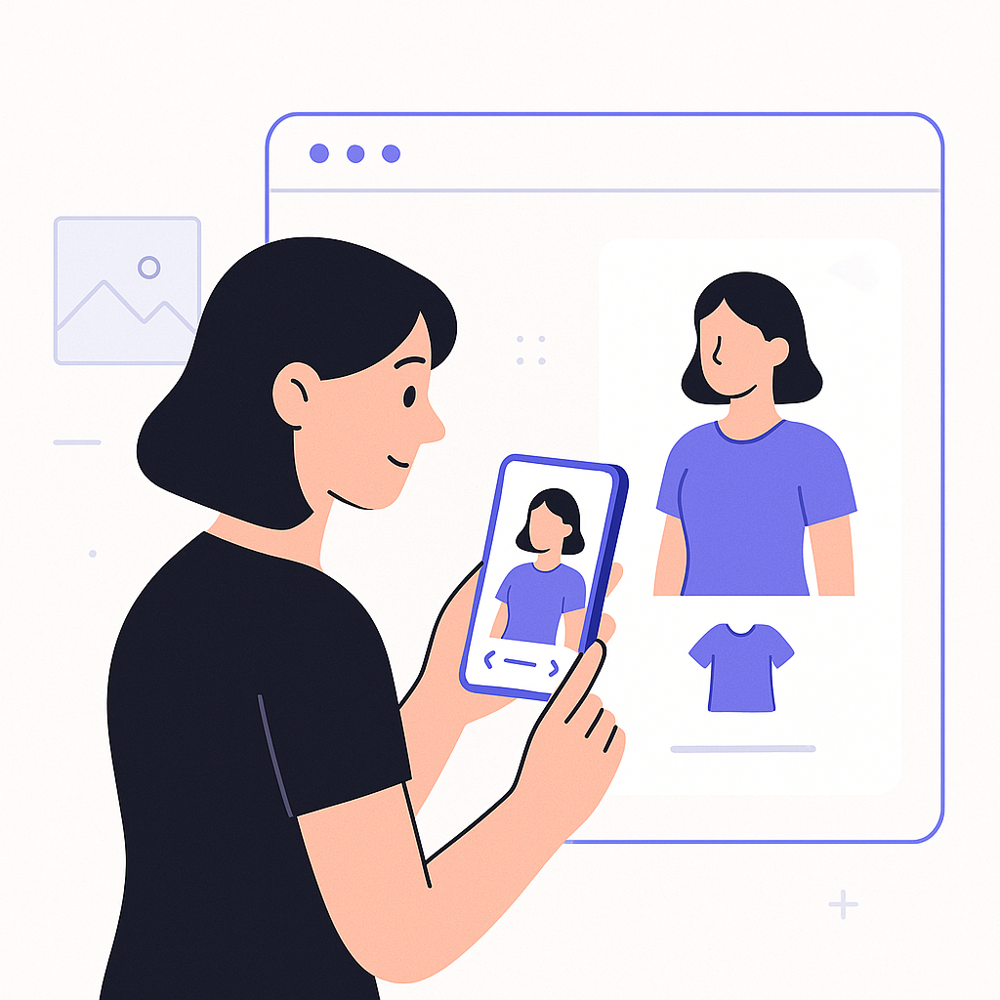

Publishing Recommendation
reviseToday's drafts cover a range of emerging trends in AI, from virtual try-ons to Meta's Muse Wonder model. However, the tone sometimes slips into hype, with claims that need more precise backing to align with Purands AI's practical and insightful voice. Posts should focus more on concrete examples and measurable outcomes to maintain credibility and avoid sounding overly promotional.
LinkedIn Posts (10)
1. Virtual try-on launches on ChatGPT ★ Purands solution · high priority
CTA: How do you see virtual try-ons changing your shopping habits?

⬇ Download image
Image prompt · isometric-flat
Caption: Virtual try-ons enhance customer satisfaction and loyalty.
Alternative hooks
- Virtual try-ons are changing how we shop online.
- ChatGPT's new feature could reshape e-commerce.
- Are virtual try-ons the key to fewer returns?
Research behind this post (sources, summaries & confidence)
Virtual try on launches on ChatGPT conf 0.80 · AI industry
The launch of virtual try-ons on ChatGPT signifies the integration of AI in e-commerce to enhance the customer experience, a key component of retention marketing strategies aimed at reducing return rates and increasing customer satisfaction.
Sources & what I took from each
- Virtual try-on features launched on ChatGPT: Reported by Retail Dive, indicating new e-commerce capabilities. ↗ read source
Recent news
- {'headline': 'ChatGPT introduces virtual try-on features', 'source': 'Retail Dive', 'date': '2026-10-12'}
Original trend links
Risks / caveats
- User acceptance of virtual try-ons can vary.
2. NTT Data to build a major data center for Anthropic in Osaka ★ Purands solution · high priority
CTA: How do you see enhanced AI infrastructure impacting your retention strategies?
Alternative hooks
- NTT Data's new Osaka data center is a big deal for AI in APAC.
- How does a data center in Osaka affect your retention marketing?
- Osaka's data center: A boost for AI-driven customer engagement.
Research behind this post (sources, summaries & confidence)
NTT Data to build a major data center for Anthropic in Osaka conf 0.70 · AI industry
The development of a significant data center in APAC highlights the region's growing importance in AI infrastructure, which could support advanced AI applications in retention marketing, potentially improving data processing and real-time engagement capabilities.
Sources & what I took from each
- NTT Data to build a major data center in Osaka for Anthropic: Reported by TechMeme, indicating a significant investment in AI infrastructure. ↗ read source
Recent news
- {'headline': 'NTT Data announces new data center project in Osaka', 'source': 'TechMeme', 'date': '2026-10-12'}
Original trend links
Risks / caveats
- The actual impact on retention marketing is speculative at this stage.
3. Alibaba's Qwen team introduces QwenGyre ★ Purands solution · high priority
CTA: How do you see reinforcement learning impacting your retention strategies?
Alternative hooks
- Alibaba's QwenGyre could change how we predict customer behavior.
- Reinforcement learning might be the key to unlocking retention marketing's potential.
- Could Alibaba's new AI model redefine customer retention in APAC?
Research behind this post (sources, summaries & confidence)
Alibaba's Qwen team introduces QwenGyre conf 0.70 · AI industry
The introduction of QwenGyre by Alibaba highlights advancements in reinforcement learning, which could enhance AI's ability to predict customer behavior and optimize retention marketing strategies within the APAC region.
Sources & what I took from each
- Alibaba introduces QwenGyre model: Reported by MarkTechPost, indicating advancements in reinforcement learning. ↗ read source
Recent news
- {'headline': "Alibaba's new AI model focuses on reinforcement learning", 'source': 'MarkTechPost', 'date': '2026-10-12'}
Original trend links
Risks / caveats
- Practical applications in marketing remain to be seen.
4. Microsoft AI’s MAI-Transcribe-2 undercuts competition ★ Purands solution · high priority
CTA: How do you see speech recognition impacting your customer service strategy?

Image prompt · isometric-flat
Caption: Integrating advanced speech recognition into CRMs.
Alternative hooks
- Microsoft's MAI-Transcribe-2 is shaking up the AI speech recognition landscape.
- How can advanced speech recognition transform your CRM operations?
- Is your retention strategy harnessing the power of real-time voice data?
Research behind this post (sources, summaries & confidence)
Microsoft AI’s MAI-Transcribe-2 undercuts competition conf 0.70 · AI industry
Microsoft's competitive pricing and performance in speech recognition can aid in enhancing CRM and customer service operations, which are crucial for effective retention marketing.
Sources & what I took from each
- Microsoft's MAI-Transcribe-2 offers competitive pricing: Reported by VentureBeat, highlighting competitive advantages in speech recognition. ↗ read source
Recent news
- {'headline': 'MAI-Transcribe-2 by Microsoft challenges competitors', 'source': 'VentureBeat', 'date': '2026-10-12'}
Original trend links
Risks / caveats
- Pricing competition may affect profit margins.
5. Introducing Decision 3.0: vLLM Semantic Router’s new open decision models ★ Purands solution · high priority
CTA: How are you currently using AI to refine your customer segmentation?
Alternative hooks
- The introduction of Decision 3.0 models is shaking up retention marketing.
- Advanced decision-making is redefining customer segmentation.
- Can Decision 3.0 models enhance your retention strategy?
Research behind this post (sources, summaries & confidence)
Introducing Decision 3.0: vLLM Semantic Router’s new open decision models conf 0.60 · AI industry
The release of Decision 3.0 models could impact retention marketing by offering more sophisticated decision-making capabilities, improving customer segmentation, and targeting strategies.
Sources & what I took from each
- Decision 3.0 models introduced: Reported by MarkTechPost, suggesting new capabilities in decision making. ↗ read source
Recent news
- {'headline': 'Decision 3.0 models set to enhance AI decision making', 'source': 'MarkTechPost', 'date': '2026-10-11'}
Original trend links
Risks / caveats
- Real-world application and effectiveness are yet to be proven.
6. Transsion's $390M Hong Kong share sale ★ Purands solution · high priority
CTA: How do you see mobile-first strategies evolving in the APAC region?
Alternative hooks
- Transsion's $390M share sale: a game-changer for mobile commerce?
- Mobile-first commerce in APAC just got a boost with Transsion's $390M move.
- How Transsion's expansion could reshape retention marketing in APAC.
Research behind this post (sources, summaries & confidence)
Transsion's $390M Hong Kong share sale conf 0.60 · AI industry
Transsion's expansion in the smartphone market through a major share sale could influence mobile-first commerce strategies in APAC, relevant for retention marketing as mobile engagement increases.
Sources & what I took from each
- Transsion conducts $390M share sale: Reported by TechMeme, suggesting expansion efforts. ↗ read source
Recent news
- {'headline': 'Transsion raises $390M to boost smartphone market presence', 'source': 'TechMeme', 'date': '2026-10-13'}
Original trend links
Risks / caveats
- Market expansion may face competitive and regulatory challenges.
7. Meta releases its first frontier model, Muse Wonder
CTA: How do you see Muse Wonder changing the landscape?
Alternative hooks
- Meta's Muse Wonder isn't just a big AI model, it's a potential game-changer for marketing.
- When size meets intelligence: Meta's Muse Wonder is here.
- Can Meta's Muse Wonder model redefine AI-driven customer insights?
Research behind this post (sources, summaries & confidence)
Meta releases its first frontier model, Muse Wonder conf 0.80 · AI industry
Meta's launch of the Muse Wonder model represents a significant advancement in AI capabilities, which could impact retention marketing by enhancing AI-driven customer insights and engagement. The model's larger size and higher benchmarks suggest potential applications in more complex marketing strategies.
Sources & what I took from each
- Meta releases Muse Wonder model: Both TechCrunch and The Verge report the release, highlighting its potential impact on AI capabilities. ↗ read source
Recent news
- {'headline': "Meta's Muse Wonder aims to redefine AI capabilities", 'source': 'TechCrunch', 'date': '2026-10-12'}
Original trend links
- https://techcrunch.com/2026/10/12/meta-releases-its-first-frontier-model-muse-wonder/
- https://www.theverge.com/ai-artificial-intelligence/1009479/meta-muse-wonder-full-ai-model
Risks / caveats
- Hype around AI capabilities often exceeds real-world applications.
8. Google's Fitbit Edge launch
CTA: How do you see wearables like Fitbit Edge impacting your marketing strategies?
Alternative hooks
- Google's Fitbit Edge is not just a watch.
- Wearables are reshaping marketing tactics.
- The Fitbit Edge could redefine consumer insights.
Research behind this post (sources, summaries & confidence)
Google's Fitbit Edge launch conf 0.75 · Product management
The launch of Fitbit Edge demonstrates Google's continued investment in wearable tech, which can be integrated into retention marketing strategies by providing deeper consumer behavior insights and facilitating personalized marketing efforts.
Sources & what I took from each
- Google launches Fitbit Edge: Reported by TechCrunch and Ars Technica, highlighting new wearable tech. ↗ read source
Recent news
- {'headline': 'Fitbit Edge set to enhance wearable tech market', 'source': 'TechCrunch', 'date': '2026-10-12'}
Original trend links
- https://techcrunch.com/2026/10/12/fitbit-edge-is-googles-middle-ground-between-fitbit-air-and-pixel-watch/
- https://arstechnica.com/gadgets/2026/10/google-announces-the-fitbit-edge-a-middle-ground-between-pixel-watch-5-and-fitbit-air/
Risks / caveats
- Adoption rates for new wearables are uncertain.
9. Omron's acquisition of OnLogic for 'physical AI'
CTA: What are your thoughts on how 'physical AI' could impact product experiences?

Image prompt · isometric-flat
Caption: Physical AI enhances product-customer interaction.
Alternative hooks
- Omron's latest move into 'physical AI' could reshape product experiences.
- AI isn't just for software anymore - Omron's acquisition tells us why.
- What does 'physical AI' mean for customer engagement? Omron's acquisition offers clues.
Research behind this post (sources, summaries & confidence)
Omron's acquisition of OnLogic for 'physical AI' conf 0.70 · AI industry
Omron's acquisition to boost physical AI efforts could lead to advancements in AI-driven product experiences, enhancing customer engagement tactics in retention marketing.
Sources & what I took from each
- Omron acquires OnLogic for physical AI: Reported by TechMeme, indicating a strategic move in AI. ↗ read source
Recent news
- {'headline': 'Omron expands AI capabilities through OnLogic acquisition', 'source': 'TechMeme', 'date': '2026-10-12'}
Original trend links
Risks / caveats
- Integration challenges could delay expected benefits.
10. Anthropic's new measures against distillation attacks
CTA: What other AI security challenges do you think need addressing?
Alternative hooks
- Security in AI is finally getting the attention it deserves.
- Ever heard of distillation attacks? They're a big deal in AI security.
- Why Anthropic's new security measures matter for AI trust.
Research behind this post (sources, summaries & confidence)
Anthropic's new measures against distillation attacks conf 0.65 · AI industry
Improved security measures by Anthropic highlight the growing need for secure AI models in marketing platforms, which is crucial for maintaining consumer trust and data integrity in retention marketing.
Sources & what I took from each
- Anthropic enhances security measures: Covered by TechMeme, addressing security issues in AI models. ↗ read source
Recent news
- {'headline': 'Anthropic steps up AI security measures', 'source': 'TechMeme', 'date': '2026-10-12'}
Original trend links
Risks / caveats
- Security measures may not fully protect against all types of attacks.
Today's Trends
| # | Trend | Category | Why it matters |
|---|---|---|---|
| 1 | Meta releases its first frontier model, Muse Wonder
source source |
AI industry | Meta's launch of the Muse Wonder model represents a significant advancement in AI capabilities, which could impact retention marketing by enhancing AI-driven customer insights and engagement. The model's larger size and higher benchmarks suggest potential applications in more complex marketing strategies. |
| 2 | NTT Data to build a major data center for Anthropic in Osaka
source |
AI industry | The development of a significant data center in APAC highlights the region's growing importance in AI infrastructure, which could support advanced AI applications in retention marketing, potentially improving data processing and real-time engagement capabilities. |
| 3 | Epic Games pivots to "AI first" game development
source source |
AI startups | Epic Games' shift to AI-first development reflects a broader trend towards integrating AI deeply into product creation processes, which could influence how retention marketing tools are developed and leveraged in the gaming sector. |
| 4 | Google's Fitbit Edge launch
source source |
Product management | The launch of Fitbit Edge demonstrates Google's continued investment in wearable tech, which can be integrated into retention marketing strategies by providing deeper consumer behavior insights and facilitating personalized marketing efforts. |
| 5 | Alibaba's Qwen team introduces QwenGyre
source |
AI industry | The introduction of QwenGyre by Alibaba highlights advancements in reinforcement learning, which could enhance AI's ability to predict customer behavior and optimize retention marketing strategies within the APAC region. |
| 6 | Anthropic's new measures against distillation attacks
source |
AI industry | Improved security measures by Anthropic highlight the growing need for secure AI models in marketing platforms, which is crucial for maintaining consumer trust and data integrity in retention marketing. |
| 7 | Virtual try on launches on ChatGPT
source |
AI industry | The launch of virtual try-ons on ChatGPT signifies the integration of AI in e-commerce to enhance the customer experience, a key component of retention marketing strategies aimed at reducing return rates and increasing customer satisfaction. |
| 8 | Introducing Decision 3.0: vLLM Semantic Router’s new open decision models
source |
AI industry | The release of Decision 3.0 models could impact retention marketing by offering more sophisticated decision-making capabilities, improving customer segmentation, and targeting strategies. |
| 9 | Amazon's robotic workforce and the future of human employees
source |
AI industry | As Amazon expands its robotic workforce, the implications for AI-driven operational efficiency could translate to more effective and scalable retention marketing solutions. |
| 10 | Transsion's $390M Hong Kong share sale
source |
AI industry | Transsion's expansion in the smartphone market through a major share sale could influence mobile-first commerce strategies in APAC, relevant for retention marketing as mobile engagement increases. |
| 11 | Omron's acquisition of OnLogic for 'physical AI'
source |
AI industry | Omron's acquisition to boost physical AI efforts could lead to advancements in AI-driven product experiences, enhancing customer engagement tactics in retention marketing. |
| 12 | Microsoft AI’s MAI-Transcribe-2 undercuts competition
source |
AI industry | Microsoft's competitive pricing and performance in speech recognition can aid in enhancing CRM and customer service operations, which are crucial for effective retention marketing. |
| 13 | Epic Games delays release for AI-first development model
source |
AI startups | The delay in Epic Games' project to focus on AI-first development is indicative of a broader industry shift towards AI integration in product development, relevant for the evolution of retention marketing tools. |
| 14 | Sophisticated AI models for math by Chinese mathematicians
source |
AI industry | The development of specialized AI models for math in China suggests potential improvements in AI algorithms, which could enhance predictive analytics in retention marketing. |
Risk Assessment
- Several posts contain exaggerated claims about AI capabilities, lacking precise evidence.
- Some posts risk sounding AI-generated by overusing phrases like 'game-changer' and 'measurable impact'.
- Posts occasionally lack concrete examples or data to back up claims, especially regarding new AI integrations.
Suggested LinkedIn Comments (30)
Open each post, then paste the copied comment. Nothing is posted automatically.
1. insight · rss:techcrunch.com — Where Muse Spark aimed to be a lightweight model that could perform at low laten
Post by: rss:techcrunch.com
Why it works: It acknowledges the post's point about capability while adding a practical consideration about efficiency.
↗ Open LinkedIn post to paste comment2. insight · rss:techcrunch.com — A Silicon Valley startup that uses weather balloons and AI to predict the weathe
Post by: rss:techcrunch.com
Why it works: It highlights the innovative blend of technologies, adding depth to the post's announcement.
↗ Open LinkedIn post to paste comment3. respectful challenge · rss:techcrunch.com — Journalists, entrepreneurs, and even some public relations professionals will te
Post by: rss:techcrunch.com
Why it works: It challenges the implication that AI could fix PR, emphasizing the importance of human skills.
↗ Open LinkedIn post to paste comment4. opinion · rss:techcrunch.com — Microsoft president Brad Smith calls for urgent AI regulation, saying milk and w
Post by: rss:techcrunch.com
Why it works: It agrees with the need for regulation, using the comparison to everyday items to emphasize urgency.
↗ Open LinkedIn post to paste comment5. insight · rss:techcrunch.com — Blueprints AI, a bootstrapped startup based in Santa Monica, developed software
Post by: rss:techcrunch.com
Why it works: It acknowledges the potential impact while pointing out a critical challenge that needs addressing.
↗ Open LinkedIn post to paste comment6. opinion · rss:techcrunch.com — Google’s newest wearable costs $179.99 and has a sleek feel like the Fitbit Air
Post by: rss:techcrunch.com
Why it works: It shifts focus from design to the practical value, adding depth to the product analysis.
↗ Open LinkedIn post to paste comment7. insight · rss:techcrunch.com — Ultrahuman and Abu Dhabi will spend the next two years working on research and c
Post by: rss:techcrunch.com
Why it works: It emphasizes the importance of validation, aligning with the post's focus on research.
↗ Open LinkedIn post to paste comment8. expansion · rss:techcrunch.com — Tomorrow at 8 a.m. PT, it all begins z— 10,000+ founders, investors, and tech op
Post by: rss:techcrunch.com
Why it works: It expands on the post by focusing on long-term outcomes from such events.
↗ Open LinkedIn post to paste comment9. opinion · rss:techcrunch.com — One of the core promises of AI is that the more it knows about a person, the bet
Post by: rss:techcrunch.com
Why it works: It addresses the tension between AI's capabilities and privacy concerns, adding a critical perspective.
↗ Open LinkedIn post to paste comment10. insight · rss:techcrunch.com — TechCrunch Disrupt 2026 is built around one question: How do you build an enduri
Post by: rss:techcrunch.com
Why it works: It adds depth by emphasizing the need for ethics and sustainability in AI-driven businesses.
↗ Open LinkedIn post to paste comment11. insight · rss:www.theverge.com — As important as some of the messages in The Social Reckoning are, the movie has
Post by: rss:www.theverge.com
Why it works: It highlights the tension between artistic intent and commercial viability, adding depth to the discussion.
↗ Open LinkedIn post to paste comment12. opinion · rss:www.theverge.com — Meta is making up for lost time in the AI race. After launching Muse Spark, the
Post by: rss:www.theverge.com
Why it works: It emphasizes the importance of practical application over mere technological advancement, offering a grounded perspective.
↗ Open LinkedIn post to paste comment13. respectful challenge · rss:www.theverge.com — Elon Musk has handed out at least $276 million to Republican groups since July,
Post by: rss:www.theverge.com
Why it works: It questions the implications of large donations without taking a partisan stance, fostering thoughtful consideration of democratic principles.
↗ Open LinkedIn post to paste comment14. insight · rss:www.theverge.com — Multiple Ukrainian drone strikes over the last week have taken Russian data cent
Post by: rss:www.theverge.com
Why it works: It connects digital and physical warfare, expanding the context of the post's information.
↗ Open LinkedIn post to paste comment15. insight · rss:www.theverge.com — Most companies have slowed down releasing new Switch 2 cases, but one of my favo
Post by: rss:www.theverge.com
Why it works: It ties product innovation to sustainability trends, adding relevance to the accessory's launch.
↗ Open LinkedIn post to paste comment16. opinion · rss:www.theverge.com — My first week with the new Android-powered laptops has been about as rocky as an
Post by: rss:www.theverge.com
Why it works: It acknowledges current challenges while expressing optimism about future integration, balancing critique with forward-looking enthusiasm.
↗ Open LinkedIn post to paste comment17. insight · rss:www.theverge.com — The No Man's Sky universe is about to get a little bit smaller - but in a good w
Post by: rss:www.theverge.com
Why it works: It connects the mobile release to broader industry trends, enriching the post's context with market dynamics.
↗ Open LinkedIn post to paste comment18. insight · rss:www.theverge.com — Today the OnePlus 16 launched in China, the company's first flagship phone since
Post by: rss:www.theverge.com
Why it works: It links product strategy to market dynamics, providing a strategic perspective on OnePlus's decisions.
↗ Open LinkedIn post to paste comment19. insight · rss:www.theverge.com — The CMF Speaker Series are the first portable Bluetooth speakers from the budget
Post by: rss:www.theverge.com
Why it works: The comment connects product design to brand strategy, adding depth to the post's focus on identity.
↗ Open LinkedIn post to paste comment20. insight · rss:www.theverge.com — The Fitbit Edge may not be Google's best-kept fitness-tracking secret, but as of
Post by: rss:www.theverge.com
Why it works: It highlights the product's unique market position, offering a consumer-centric perspective that aligns with the post's theme.
↗ Open LinkedIn post to paste comment21. insight · rss:feeds.arstechnica.com — As of Friday, state health officials reported 1,136 cases across 41 counties.
Post by: rss:feeds.arstechnica.com
Why it works: It ties the post to AI's role in improving public health data management, adding depth to the discussion.
↗ Open LinkedIn post to paste comment22. opinion · rss:feeds.arstechnica.com — "No more hand-written code" or AI-free art for delayed Marvel/Star Wars shooter.
Post by: rss:feeds.arstechnica.com
Why it works: It acknowledges the tension in the post and provides a clear stance on the balance needed in creative industries.
↗ Open LinkedIn post to paste comment23. expansion · rss:feeds.arstechnica.com — You can get a universe in your pocket if you have an iPhone 11 or later.
Post by: rss:feeds.arstechnica.com
Why it works: It expands on the implications of the technology mentioned in the post, providing a broader context.
↗ Open LinkedIn post to paste comment24. insight · rss:feeds.arstechnica.com — Without a cause of death, it's unclear if Russia's precautions were the right on
Post by: rss:feeds.arstechnica.com
Why it works: It connects the post to a broader theme of data-driven decision-making and the role of AI.
↗ Open LinkedIn post to paste comment25. opinion · rss:feeds.arstechnica.com — “I may have information regarding this case," Claude AI told Philly police.
Post by: rss:feeds.arstechnica.com
Why it works: It acknowledges the potential while critically assessing the ethical dimensions, providing a balanced view.
↗ Open LinkedIn post to paste comment26. insight · rss:feeds.arstechnica.com — Russian bloggers warn Russia’s hyper-centralized digital economy is vulnerable.
Post by: rss:feeds.arstechnica.com
Why it works: It provides a strategic perspective on the implications of a centralized digital economy, adding depth to the discussion.
↗ Open LinkedIn post to paste comment27. opinion · rss:feeds.arstechnica.com — Kojima's discontinued "playable trailer" is no longer stuck on a few aging PS4 h
Post by: rss:feeds.arstechnica.com
Why it works: It stresses the importance of digital preservation, a point not directly mentioned in the post.
↗ Open LinkedIn post to paste comment28. expansion · rss:feeds.arstechnica.com — Also, F1’s final sprint saw our first real wet racing of the year.
Post by: rss:feeds.arstechnica.com
Why it works: It draws a parallel between sports and business, offering a fresh perspective on adaptability.
↗ Open LinkedIn post to paste comment29. insight · rss:feeds.arstechnica.com — The Fitbit Edge offers more than the Air, but it's not a real smartwatch.
Post by: rss:feeds.arstechnica.com
Why it works: It addresses a broader issue in consumer tech, adding a layer of analysis to the post's content.
↗ Open LinkedIn post to paste comment30. opinion · rss:feeds.arstechnica.com — The second-largest corporate employer has bet big on robot workers to scale.
Post by: rss:feeds.arstechnica.com
Why it works: It provides a critical view on the implications of automation and workforce dynamics, adding depth to the original post.
↗ Open LinkedIn post to paste comment